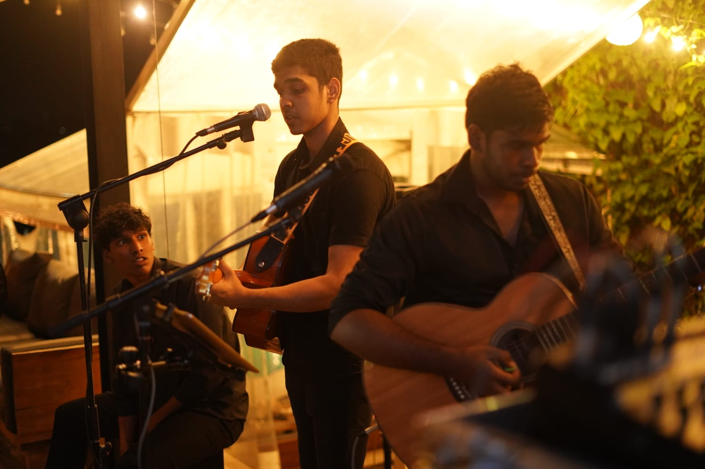
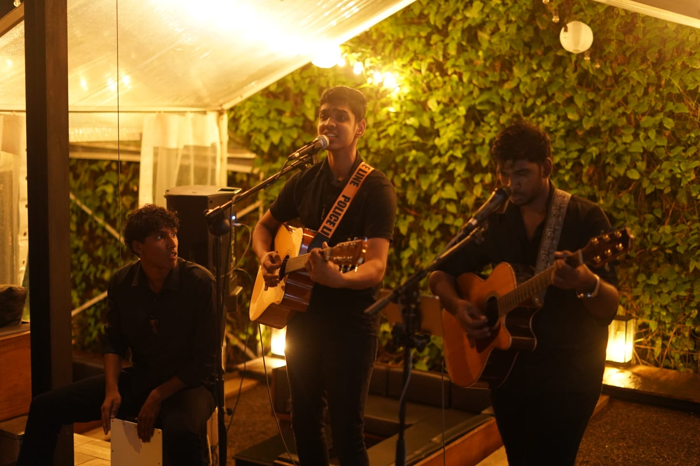

My name is Dinith Ranasinghe. I am a multi-disciplinary creative based in Sri Lanka, and a student working across graphic design, three-dimensional art, and music production. I do not see these as separate things they are three ways of expressing the same creative instinct. And since my childhood i have shown interests in creative things especailly in MUSIC.
My journey started at when i was grade 4 with a small guitar and also with a curiosity about how things look, how they feel, and how they move. That curiosity led me to study design formally and to teach myself 3D modelling and music production alongside it. and I believe things like Music and love cannot be classify.
"I create things that people feel before they fully understand them."
I believe great creative work lives at intersections between the digital and physical, between silence and sound, between a flat surface and a sculpted form.


Started exploring graphic design out of curiosity. Picked up Photoshop and Illustrator and began learning the fundamentals of visual communication, colour, and composition.
Discovered Blender and became fascinated by 3D modelling. Spent months learning form, light, and rendering eventually creating complete 3D environments and studio scenes.
Started producing music and performing live. Found that the logic of design rhythm, hierarchy, space translated directly into sound. Began performing at events across Sri Lanka.
Took on freelance design and 3D projects for local clients. Delivered brand identities, product renders, posters, and social media content.
Studying Advanced Web Design and combining all three disciplines into one cohesive portfolio. Actively seeking collaborations with brands and fellow creatives.